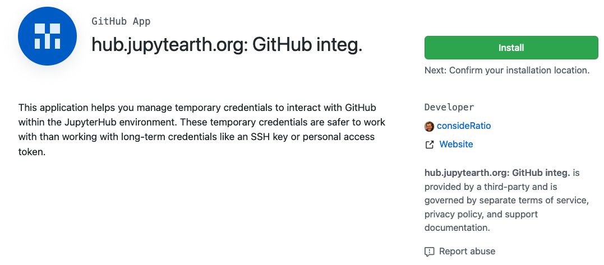
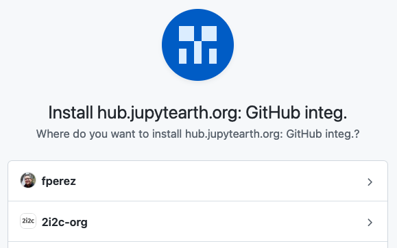
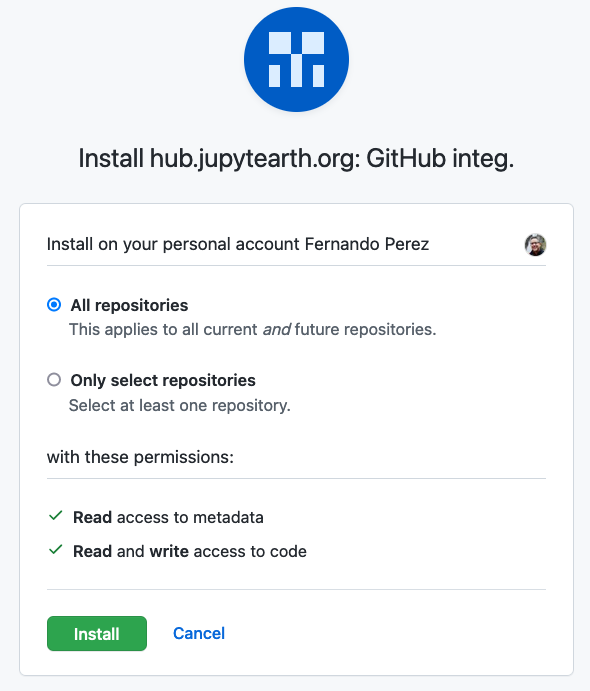
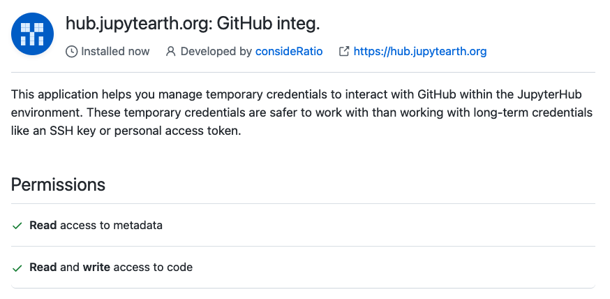

Github Authentication from a hosted JupyterHub
Contents
Github Authentication from a hosted JupyterHub#
When using a cloud-hosted JupyterHub, it is important to have a secure and convenient way to control how to push new code to GitHub or access private repositories. We recommend using the gh-scoped-creds utility developed by Yuvi Panda. Once installed and properly configured on a JupyterHub instance (that is something your Hub administrator needs to set up), it allows you to have fine-grained control over which repositories you want to allow push and pull from. When active, you can access those repos over HTTPS (not over SSH), without having to constantly type passwords or tokens. The authentication is active for the entire hub, so it works from any terminal.
Usage#
To use this tool, run the following code
import gh_scoped_creds
%ghscopedcreds
and follow the instructions (the companion GHAUTH notebook in this repository is available as a convenient mnemonic you can keep in your favorites for quick and frequent use of this).
Access setup#
Note that the first time you use this tool on a new hub, you will not be able to actually connect yet. You first have to go to GitHub (the tool will show you the URL to go to, as it is hub-specific) and configure it to decide which repos you would like to allow access to. You also need to revisit that same link if you want to change the scope of this access, either to add new orgs/repos or to remove them.
First, you need to allow installation of this app (the “tunnel” between the JupyterHub and GitHub is called an App on Github):

When you click “Install”, GitHub will ask you where you want it installed - you can choose to add it to your personal account or to orgs you work on, so you can connect to those orgs:

Within each account/org, you then have to choose whether to allow access to all repositories or only to specific ones:

Once the process is completed, GitHub will show you the state of your setup with a page like this one: 